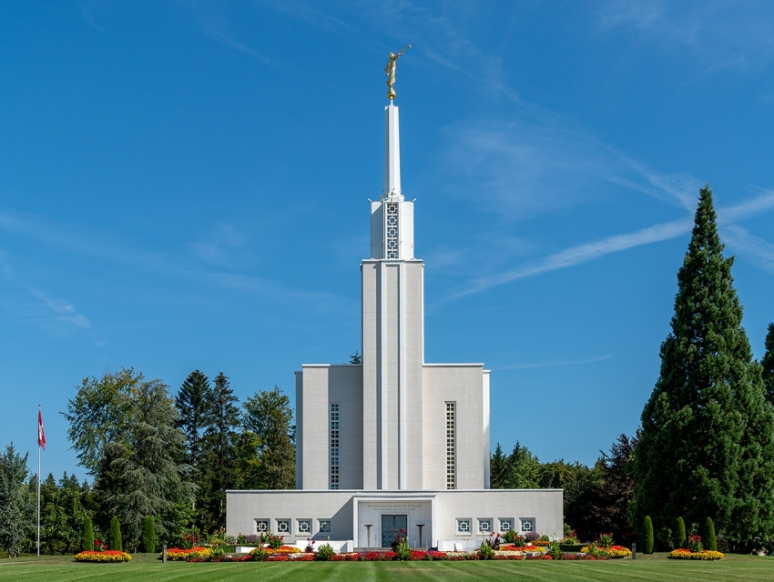
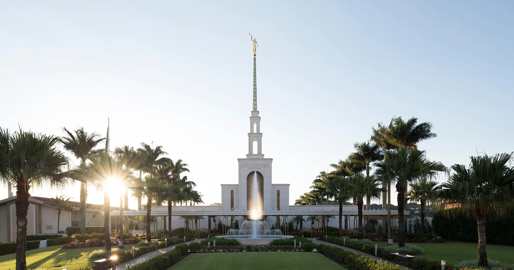
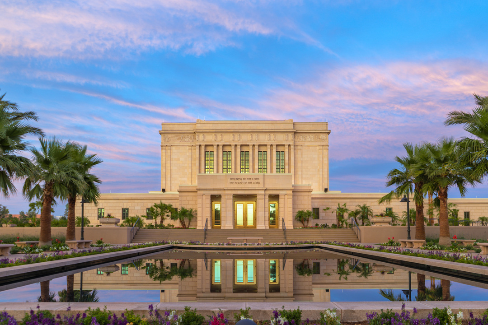

- Temple Facts
- Currently 189 dedicated and operating temples worldwide
- 146 temples either under construction or in planning
- The most dedications in one year was in 2000 with 34 dedications
- The Washington D.C. temple is the tallest one at 288 feet
- Some temples have the angel Moroni facing west instead of east because of the spire placement
- Temple Examples
- Laie Hawaii Temple
- First temple built outside church headquarters territory

- Bern Switzerland Temple
- First temple dedicated in Europe

- St. George Utah Temple
- First temple where proxy endowments were performed

- Sao Paulo Brazil Temple
- First temple dedicated in South America

- Mesa Arizona Temple
- First temple to present ordinances in a language different than English (Spanish)
- Video
- Tableau Graph
Back to Top